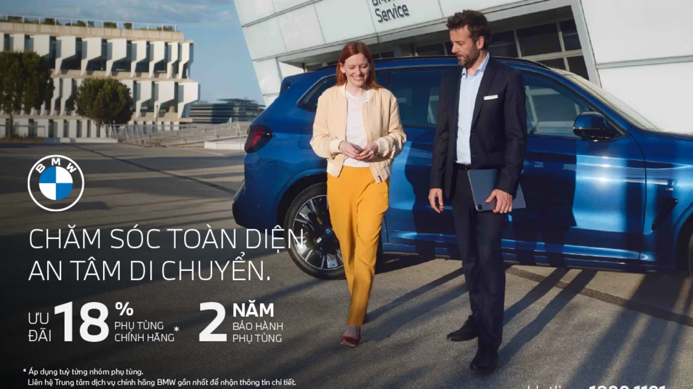

Thaco Auto ưu đãi 18% giá phụ tùng chính hãng BMW cho khách hàng.
Một mùa xuân nữa lại đến, hãy cùng BMW Việt Nam khởi đầu năm mới đầy hứng khởi bằng những chuyến hành trình thú vị. Nhằm duy trì giá trị bền vững của xe BMW và giúp xe luôn vận hành tối ưu trên mọi cung đường, BMW Việt Nam mong muốn tiếp tục đồng hành, chăm sóc xe BMW cùng Quý khách thông qua chương trình Value Service - Chăm sóc toàn diện, An tâm di chuyển với ưu đãi 18% phụ tùng chính hãng khi thay mới tại Trung tâm dịch vụ ủy quyền BMW. Phụ tùng được ưu đãi thuộc các hệ thống: động cơ, phanh, bình ắc quy, cao su chân máy và hộp số và được thiết kế chuyên biệt để phù hợp với từng hệ thống trên xe, giúp duy trì giá trị nguyên bản của xe sau nhiều năm vận hành.
-
Tiết kiệm đến 18% giá trị phụ tùng chính hãng khi thay mới.
-
Sử dụng phụ tùng chính hãng được bảo hành 2 năm.
-
Từng gói phụ tùng được thiết kế chuyên biệt phù hợp với mọi nhu cầu và mẫu xe BMW.
-
Gia tăng hiệu quả vận hành xe và duy trì giá trị lâu dài cho chiếc BMW.
-
Công việc thực hiện bởi đội ngũ kỹ thuật viên được chứng nhận BMW toàn cầu.
-
Thiết bị, công cụ hiện đại và ứng dụng công nghệ sửa chữa mới nhất.
-
An tâm tận hưởng niềm vui trọn vẹn với sự hỗ trợ toàn diện của BMW.
Bên cạnh các gói ưu đãi về giá khi thay thế phụ tùng chính hãng, Thaco Auto còn cung cấp nhiều quyền lợi hậu mãi, cùng các dịch vụ chăm sóc xe chuyên sâu. Theo đó, chủ xe BMW tại Việt Nam được hưởng các quyền lợi như: bảo hành 5 năm không giới hạn km, dịch vụ hỗ trợ trên đường (Roadside Assistance), cập nhật trực tuyến tình trạng xe khi vào xưởng (BMW Service video), bảo dưỡng trọn gói (BSI) và trải nghiệm đa dạng dịch vụ chăm sóc nội ngoại thất, làm đẹp xe. giúp xe gia tăng hiệu quả vận hành, đảm bảo tính an toàn và giữ được giá trị nguyên bản, để Quý khách luôn tận hưởng trọn vẹn “cảm giác lái phấn khích” khi đồng hành cùng xe BMW.
Chương trình Chăm sóc toàn diện, An tâm di chuyển được áp dụng tại tất cả Trung tâm dịch vụ chính hãng BMW trên toàn quốc từ ngày 17/02/2025 đến hết ngày 10/05/2025. Để biết thêm thông tin chi tiết chương trình, Quý khách vui lòng liên hệ Trung tâm dịch vụ uỷ quyền BMW gần nhất hoặc Hotline 1800 1101.